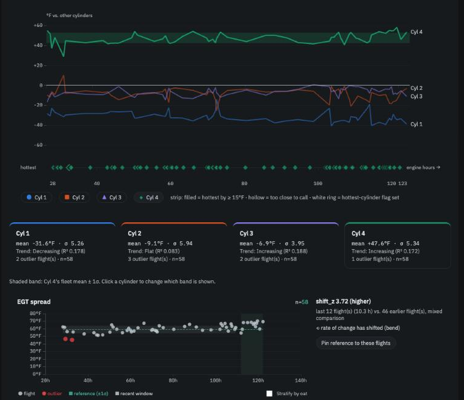

In brief. On a FADEC engine the four cylinders should behave as a matched set, so the most telling single picture of engine health is how their cruise exhaust temperatures sit relative to one another — and whether that picture is changing. The app watches it two ways: the spread from hottest to coolest, and each cylinder's deviation from the other three. On Trends they are drawn together as one Cylinder balance panel: four lines that, on a healthy engine, run roughly flat and parallel.
The exhaust gas temperature of one cylinder on one flight depends on power, altitude, outside air and the day. The pattern across the four cylinders depends on the cylinders. Because the engine computer gives each cylinder the fuel and spark it intends, a cylinder that drifts away from its neighbours is telling you about an injector, a plug, an ignition coil or the probe itself — not about how the engine was leaned, because it wasn't.
Most engines have a cylinder that always runs hottest. On a turbocharged 915iS or 916iS it is usually cylinder 4, nearest the turbo exhaust. That is normal, and the app learns which cylinder is your usual hottest rather than assuming a flat ideal.
Spread — hottest cruise EGT minus coolest — is the one-number summary, and the one the Operators Manual limits (392 °F between cylinders at normal fuel flow). The app compares each flight's spread with your usual spread in similar outside air temperature and watches for a widening trend over engine hours.
Deviation — each cylinder's cruise EGT minus the average of the other three — is the diagnostic version. It tells you which cylinder moved and in which direction. A cylinder running hotter than its own usual can mean a lean injector; cooler can point to ignition or a plug; erratic can point to the probe. The four deviations always sum to zero, so when one cylinder moves, the others appear to move the other way; the app reports the cylinder whose change is largest.
When one cylinder explains a widening spread, you get one insight under Cylinder EGT deviation, not two.
Healthy: four flat, parallel lines. Worth a look: one line drifting away.
Two cards. Cylinder balance (EGT spread) gives this flight's spread, your usual, and the OM limit. Cylinder EGT deviation lists all four: Cyl 1 −33 °F (avg −32), Cyl 2 −18 °F (avg −9), Cyl 3 −4 °F (avg −7), Cyl 4 +55 °F (avg +48) — each cylinder against its own history. Both measure cruise only, so a flight without a settled cruise shows unavailable.
Four deviation lines over engine hours, with the reference band of whichever cylinder you select shaded behind them.
A hottest-cylinder strip: one mark per flight, shaped and coloured by which cylinder was hottest; hollow when its lead was under 15 °F (too close to call), ringed when it differed from your usual.
Usual hottest in the header — Cyl 4 (100 %, 57 flights, learned) — once one cylinder has won at least 70 % of ten or more flights by a clear margin. Until then the engine's expected cylinder is shown as a prior.
The spread strip below, with the OM limit drawn on it.
In the change summary at the top of Trends, the four deviations collapse to a single row naming the cylinder that moved most — cylinder 4 is about 5 °F running hotter than it used to (relative to the other cylinders) — and the spread ranks separately.

Trends → Cylinder balance: four deviation lines, the hottest-cylinder strip, and the spread.
Four flat, parallel lines with the same cylinder hottest flight after flight: a healthy, consistent engine.
One line stepping or drifting away, especially if the hottest cylinder changes: look at that cylinder — injector, plug, coil, probe.
All four lines moving together cannot happen (they sum to zero); if the spread widens with no single cylinder responsible, the change is spread across cylinders and worth watching over more flights.
A noisy line on one cylinder with the others steady: probe or connector first.
As always, one flight is a note; a trend across flights is a conversation with your mechanic.
Further reading: Spec 08 (cylinder balance) and research paper §6 in the repository.